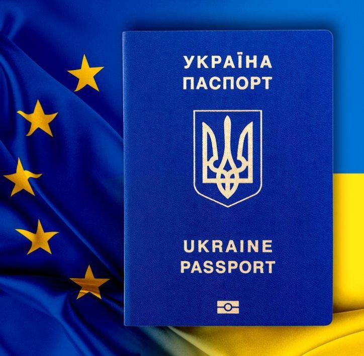

Зміст:
- Для чого потрібен закордонний паспорт
- Як і куди подавати заяву на оформлення закордонного паспорту
- Документи для оформлення закордонного паспорта особі старше 16 років
- Документи для оформлення закордонного паспорта дитині
- Як отримати другий закордонний паспорт
- За який термін оформляють закордонний паспорт
- Посилання на законодавство
1. Для чого потрібен закордонний паспорт
"Паспорт громадянина України для виїзду за кордон (закордонний паспорт) є одним із документів, які дозволяють перетин державного кордону громадянам України. Він також є підтвердженням громадянства України осіб, які виїхали з України на постійне місце проживання до інших країн. Термін дії закордонного паспорту для дітей до 16 років - 4 роки, для осіб старше 16 років - 10 років.
2. Як і куди подавати заяву на оформлення закордонного паспорту
Для оформлення паспорта громадянина України для виїзду за кордон в Україні необхідно подати заяву до будь-якого підрозділу ДМС, що має можливість оформлення закордонного паспорту. Для візиту до підрозділу можна заздалегідь записатись через iGov або звернутися особисто.
Як подати заяву на оформлення закордонного паспорту через iGov
При оформленні закордонного паспорту для дорослого чи дитини, а також у разі викрадення чи втрати паспорта ви маєте можливість заздалегідь записатися до підрозділу ДМС за допомогою порталу державних послуг iGov. Ви отримуєте на електронну пошту листа, у якому буде вказана дата візиту, перелік необхідних документів, реквізити для сплати необхідних платежів, зразки заяв, які можна роздрукувати та принести заповненими. Лист дублюється у вкладці сайту iGov “Мій журнал”.
Як особисто подати заяву на оформлення закордонного паспорта до ДМС

Ви також можете подати заяву на оформлення закордонного паспорту, звернувшись у підрозділ ДМС особисто. Для цього потрібно принести з собою необхідні документи та квитанції про сплату. Заяви в такому разі ви зможете заповнити на місці. Реквізити для сплати можна отримати у підрозділі ДМС або на сайті ДМСУ.
Як подати заяву на закордонний паспорт, якщо ви за кордоном
Якщо ви проживаєте за кордоном, то для оформлення/переоформлення паспорта громадянина України для виїзду за кордон потрібно звернутися до найближчої закордонної дипломатичної установи України.
3. Документи для оформлення закордонного паспорта особі старше 16 років
Щоб мати можливість вибору зручної дати та часу візиту до підрозділу ДМС, скористайтеся відповідною послугою на порталі iGov. У листі на електронну пошту Ви отримаєте необхідні реквізити для сплати державного мита та адміністративної послуги, а також перелік документів. Особи, яким виповнилося 16 років, подають заяву на оформлення закордонного паспорта самостійно. З собою необхідно мати такі документи:
- оригінал та копію паспорта громадянина України або іншого документу, що посвідчує особу та підтверджує громадянство України (у разі оформлення паспорта у закордонній дипломатичній установі України);
- паспорт громадянина України для виїзду за кордон (за наявності);
- оригінал та копію довідки про отримання індивідуального податкового номеру (ІПН) (особи що досягли 18 років, та оформлюють паспорт громадянина України для виїзду за кордон вперше (або в порядку обміну паспорта, отриманого до 2007 року);
- квитанція про сплату з відміткою банку про здійснення встановлених законодавством платежів (консульського збору) або оригінал і копію документа про звільнення від таких платежів (консульського збору).
4. Документи для оформлення закордонного паспорта дитині
Щоб заздалегідь замовити візит до ДМС з вибором дати та часу скористайтесь посиланням на порталі iGov. У
повідомлені на електронну пошту ви отримаєте реквізити для сплати адміністративної послуги та перелік
необхідних документів.
Ви повинні надати такі документи:
- оригінал та копію свідоцтва про народження або паспорт громадянина України (для громадян, які досягли 14-річного віку)
- якщо батьки або один із батьків дитини на момент її народження були іноземцями або особами без громадянства, також подається довідка про реєстрацію особи громадянином України (у разі оформлення вперше паспорта для виїзду за кордон із застосуванням засобів Реєстру);
- квитанцію про сплату з мокрою печаткою банку, яка оформлена на одного з батьків з ким дитина зареєстрована (у призначенні платежу слід вказати ПІБ дитини, для якої буде оформлюватись закордонний паспорт);
- якщо на момент подання документів дитині виповнилось 12 років присутність дитини є обов'язковою! (якщо дитині не виповнилось 12 років потрібно надати одну фотокартку розміром 10х15 сантиметрів для внесення відцифрованого зображення особи шляхом сканування (обов'язково матове фото виконане на білому фоні, обличчя дитини займає не менше 80% фотографії), присутність дитини не обов'язкова).
5. Як отримати другий закордонний паспорт

Другий закордонний паспорт видається особам, яким виповнилося 18 років, які регулярно їздять за кордон у відрядження і яким необхідно для цього завчасно оформляти візи. Ця потреба обґрунтовується у заяві, яка подається разом з іншими документами. Оформлення другого паспорта громадянина України для виїзду за кордон можливе лише за наявності діючого закордонного паспорта. Громадянин України не може мати більше двох діючих закордонних паспортів.
6. За який термін оформляють закордонний паспорт
Заяви про видачу закордонного паспорту розглядаються:
- у звичайному порядку - до 20 робочих днів;
-
при терміновому оформленні (за вашою заявою) із сплатою подвійного розміру держмита та вартості послуги у будь-якому банку - до 7 робочих днів;
- якщо поїздка пов'язана з терміновим лікуванням, супроводом тяжко хворого чи смертю родича, який проживав за кордоном - протягом 3 робочих днів;
- у разі виїзду на постійне місце проживання (еміграція) – 3 місяці;
- у разі виїзду на постійне проживання за кордон усиновленої іноземцями дитини - до 10 робочих днів.
Дізнатися, на якій стадії знаходиться оформлення вашого закордонного паспорту, можна за допомогою спеціального сервісу на сайті ДМС України.
Посилання на законодавство
- ЗУ від 21.01.1994 № 3857-XII “Про порядок виїзду з України і в'їзду в Україну громадян України”;
- ЗУ від 20.11.2012 № 5492-VI “Про Єдиний державний демографічний реєстр та документи, що підтверджують громадянство України, посвідчують особу чи її спеціальний статус” ;
- Постанова КМУ від 26.11.2014 № 669 “Про затвердження Порядку отримання, вилучення з Єдиного державного демографічного реєстру та знищення відцифрованих відбитків пальців рук особи” ;
- Постанова КМУ від 07.05.2014 № 152 “Про затвердження зразка бланка, технічного опису та Порядку оформлення, видачі, обміну, пересилання, вилучення, повернення державі, знищення паспорта громадянина України для виїзду за кордон, його тимчасового затримання та вилучення”;
- Постанова КМУ від 26.10.2011 № 1098 “Деякі питання надання підрозділами МВС та ДМС платних послуг”.